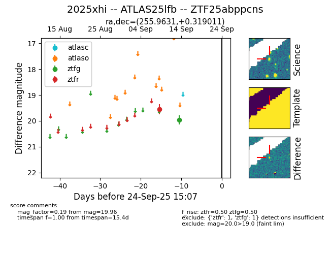

FINK: ZTF25abppcns
Lasair: ZTF25abppcns
ALeRCE: ZTF25abppcns
TNS: 2025xhi
YSE: 2025xhi
ZTF25abppcns (ztf,fink)
2025xhi (tns,yse)
ATLAS25lfb (atlas)
equatorial (ra, dec) = (255.9631,+0.31901)
galactic (l, b) = (20.2111,+23.90013)

last ztfg=19.96, ztfr=19.56
1 ztfg, 1 ztfr detections